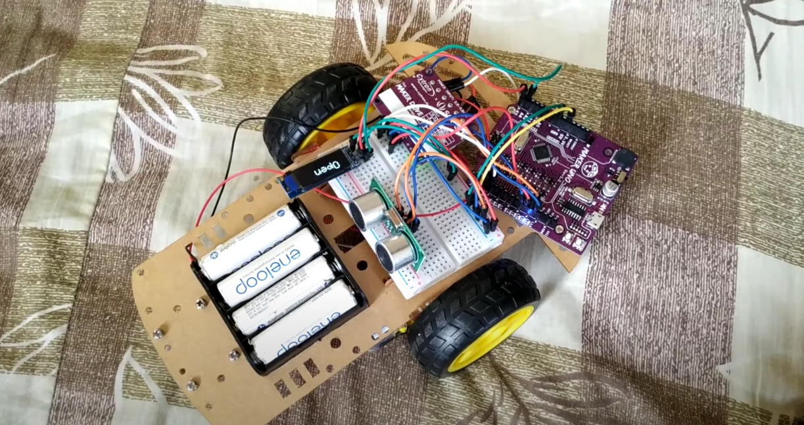
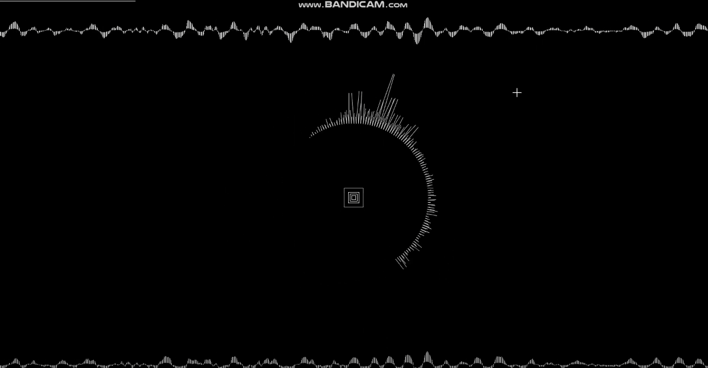

WORK
portfolio
work

Project Arduino
รถบังคับผ่านสัญญาณบลูทูธ สามารถขับได้โดยใช้โทรศัพท์เปิดสัญญาณบลูทูธเพื่อเชื่อมต่อ และสามารถตรวจจับสิ่งกีดขวางพร้อมแสดงสัญญาณเตือนออกมาและหากตรวจจับสิ่งกีดขวางได้รถจะหักหลบอัตโนมัติ

Project Processing
การประมวลผลเพลงให้ออกมาเป็นภาพโดยจะมีการเล่นตามจังหวะของเสียงเพลง สามารถปรับได้ 3 รูปแบบ และสามารถหยุดพร้อมเล่นเพลงต่อได้